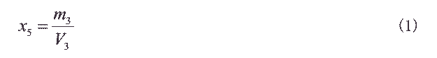
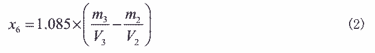
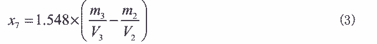
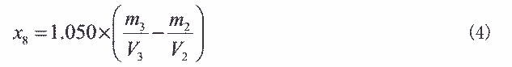
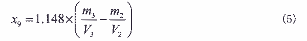
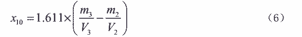
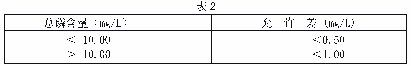

26.总磷含量的测定——钼酸铵分光光度法
本方法适用于含 PO43 0.02～50mg/La 工业循环冷却水中磷含量的测定。
1. 原理
在酸性溶液中，用过硫酸钾作为分解剂，将聚磷酸盐和有机膦转化为正磷酸盐，正
磷 酸 盐 与 钼 酸 铵 反 应 生 成 黄 色 的 磷 钼 杂 多 酸 ， 再 用 抗 坏 血 酸 还 原 成 磷 钼 蓝 ， 于
710nm 最大吸收波长处分光光度法测定。
反应式同“正磷酸盐含量的测定”第１条。
2. 试剂
同正磷酸盐和总无机磷含量的测定第 2 条和下列试剂。
2.1 过硫酸钾 40g/L 溶液：
称取 20g 过硫酸钾，精确至 0.5g，溶于 500mL 水中,摇匀,贮存于棕色瓶中(有效期一个
月)。
３．仪器
同正磷酸盐测定第 3条。
４．分析步骤
4.1 工作曲线的绘制
同正磷酸盐测定的试样(4.2)中取 5.00mL 试验溶液于 100mL 锥形瓶中加入 1.0mL 硫酸
溶液（见总无机磷测定之 2.3）， 5.0mL 过硫酸钾溶液(2.1)，用水调整锥形瓶中溶液体积至
约 25mL，置于可调电炉上缓缓煮沸 15 分钟至溶液快蒸干为止。取出后流水冷却至室温，定
量转移至 50mL 容量瓶中。加入 2.0mL 钼酸铵溶液（见正磷酸盐测定之 2.4）， 3.0mL 抗坏血
酸溶液（见正磷酸盐测定之 2.3）， 用水稀释至刻度,摇匀,室温下放置 10 分钟。在分光光度
计 710nm 处，用 1cm 吸收池，以不加试验溶液的空白调零测吸光度。
５．分析结果的计算
以 mg/L 表示的试样中，总磷(以 PO43计)含量(X5)，按式（1）计算:

式中:m3——从工作曲线上查得的以 µg 表示的 PO43 量；
V3——移取试验溶液的体积，mL。
5.1 以 mg/L 表示的羟基乙叉二膦酸(HEDP)含量(X6)；按式(2)计算:

式中:1.085——系 PO43 换算为羟基乙叉二膦酸的系数。
5.2 以 mg/L 表示的羟基乙叉二膦酸钠（HEDPS 含量(X7),按式(3)计算:

式中:1.548——系 PO43 换算为羟基乙叉二膦酸钠的系数。
5.3 以 mg/L 表示的氨基三甲叉膦酸(ATMP)含量(X8)，按式(4)计算:

式中:1.050——系 PO43换算为氨基三甲叉膦酸的系数。
5.4 以 mg/L 表示的乙二胺四甲叉膦酸(EDTMP)含量(X9)，按式(5)计算:

式中:1.148——系 PO43 换算为乙二胺四甲叉膦酸的系数。
5.5 以 mg/L 表示的乙二胺四甲叉膦酸钠(EDTMPS)含量(X10)，按式(6)计算:

式中:1.611——系 PO43 换算为乙二胺四甲叉膦酸钠的系数。
所得结果应表示至二位小数。
６．允许差
两次平行测定结果之差应符合表２的规定。

取算术平均值为测定结果。